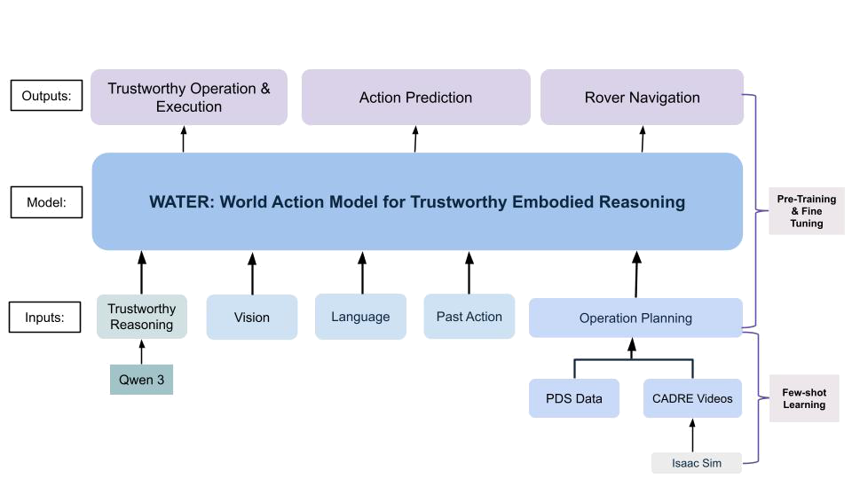
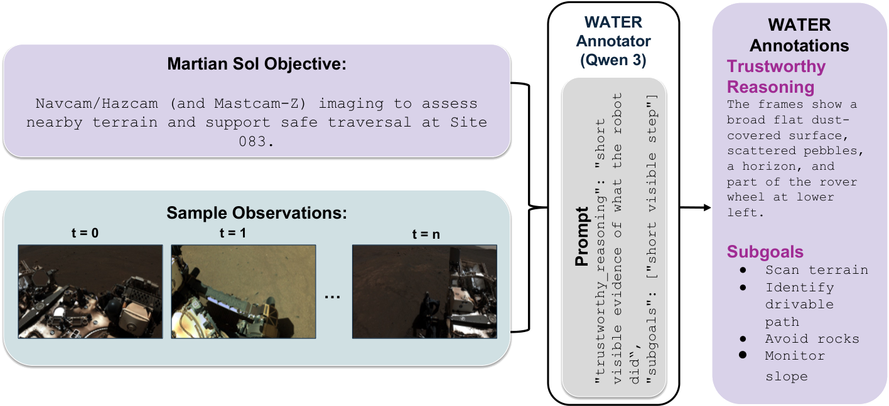

WATER
World Action Model and Benchmark for Trustworthy Embodied Reasoning
A world action model that grounds vision, language, and past actions in trustworthy reasoning for embodied operation and rover navigation.
Overview
- Combines vision, language, past actions, and operation planning into a single world action model
- Uses trustworthy reasoning to support reliable operation and execution
- Trained with PDS data and CADRE videos from Isaac Sim to expand embodied robotics beyond tabletop manipulation
Model Architecture

Annotation Pipeline
